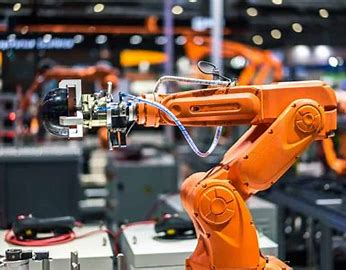

| Home | Call for Papers | Register | Committee | Contact Us |
Erode Sengunthar Engineering College (an Autonomous Institution), Approved by AICTE, New Delhi and perma- nently affiliated to Anna University, Chennai. It was established in the year 1996 for the upliftment of urban and rural youth by the philanthropic visionaries of Erode Sengunthar Educational Trust. The college offers Sixteen UG programmes in Engineering and ten PG programmes. They are, B.E. in Civil Engineering, Computer Science and Engineering, Computer Science and Design, Electrical and Electronics Engineering, Electronics and Communication Engineering, Electronics and Instrumentation Engineering, Mechanical Engineering, Mechanical Engineering (Tamil Medium), Bio-Medical Engineering, Agriculture Engineer- ing, Robotics and Automation, B.Tech. Chemical, Biotechnology, Information Technology and Artificial Intelligence and Data Science Engineering and five years integrated course M.Tech Computer Science and Engineer- ing. M.E. Environmental Engineering, M.E. Structural Engineering, M.E. Computer Science and Engineering, M. E. Industrial Safety Engineering, M.E. Manufacturing Engineering, M.E. Power Electronics and Drives, M.E. Applied Electronics, M.Tech. Chemical Engineering, M.C. A and M.B.A.
It has a full-fledged infrastructure furnished in all aspects. It is also well-connected by the bus routes from Erode (25km), Coimbatore (80 km) and Salem (80 km). The nearest airports are located at Coimbatore and Salem. All the UG courses are accredited by National Board of Accreditation (NBA). The college is accredited by NAAC "A" grade. ISO 9001:2008 certified institution.
The Departments of Mechanical Engineering and Robotics and Automation were established in the year of 1996 and 2020, respectivley. Departments have well equiped Laboratories with State -of-the- art infrastructure facilities which includes Heat Power Lab, Dynamics Lab, Heat Transfer Lab, Advanced Manufacturing Lab, Strength of Materials lab, CAD/CAM centre and well advanced robotics analysis laboratory equipped with latest softwares win the field of Tool design & automation.
In addition to an impressive array of equipment such as 3D Printers, CNC Lathe and Milling machines, CNC Laser Cutter, CNC router, Pin On Disc apparatus, Emission analyzer, Lathe tool dynamometer, Drilling tool, and milling tool dynamometers, and IC Engines with eddy current dynamometer, our department proudly boasts a Drone Development Lab. This lab is dedicated to fostering innovation and hands-on experience in the field of unmanned aerial vehicles (UAVs).
The objective of the conference is to bring the Researchers, Educators, Professional Engineers and technologists into a single forum in order to discuss & debate on the innovative and intelligent design of Engineering Products, Processes, and Computing systems. Further, analysis of various engineering systems and incorporation of automation in these systems will be discussed. The end of the conference there will be possible solutions and conclusions on the challenges emerging out of the theme.
Department of Mechanical Engineeriing & Robotics and Automation
|
|
|
 |